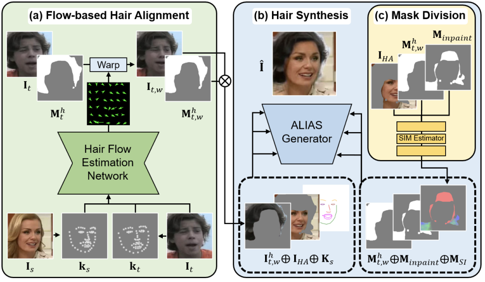

|
Hyelin Nam I'm a master student at KAIST, supervised by Professor Jong Chul Ye. Before starting my Master's degree, I was supervised by Professor Jaegul Choo. My goal is to advance generative models to better capture and represent the real world. I have contributed to this by enhancing the controllability of image and video diffusion models. I aim to expand their impact by improving temporal quality and achieving more realistic motion representation, integrating diverse modalities such as text prompts and 3D attributes. **I am actively looking for PhD openings starting in Fall 2025** |

|

|
Optical-Flow Guided Prompt Optimization for Coherent Video Generation
Hyelin Nam*, Jaemin Kim*, Dohun Lee, Jong Chul Ye to appear, 2024 code Prompt optimization driven by an optical flow discriminator to enhance temporal consistency and natural motion dynamics in video diffusion models. |

|
CFG++: Manifold-constrained Classifier Free Guidance For Diffusion Models
Hyungjin Chung*, Jeongsol Kim*, Geon Yeong Park*, Hyelin Nam*, Jong Chul Ye arXiv, 2024 project page / arXiv / code A simple fix to CFG that enables lower guidance scales, improves sample quality and invertibility. |

|
Contrastive Denoising Score for Text-guided Latent Diffusion Image Editing
Hyelin Nam, Gihyun Kwon, Geon Yeong Park, Jong Chul Ye CVPR, 2024 project page / arXiv / code Ensure structural correspondence by leveraging diffusion features during the score distillation process. |
|

|
HairFIT: Pose-invariant Hairstyle Transfer via Flow-based Hair Alignment and Semantic-region-aware Inpainting
Chaeyeon Chung*, Taewoo Kim*, Hyelin Nam*, Seunghwan Choi, Gyojung Gu, Sunghyun Park, Jaegul Choo BMVC, Oral Presentation, 2022 Best Paper Award, Korean Artificial Intelligence Association, 2021 arXiv |